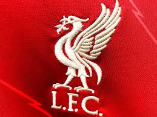

|  | |
Not only being a chess lover Stanley Nsubuga is also a football fanatic.
He supports liverpool in England whereby his favorite player there is Trent Alexander Arnold,
Real Madrid in spain.
Stanley Nsubuga is not that a gifted Footballer but he likes playing
Football